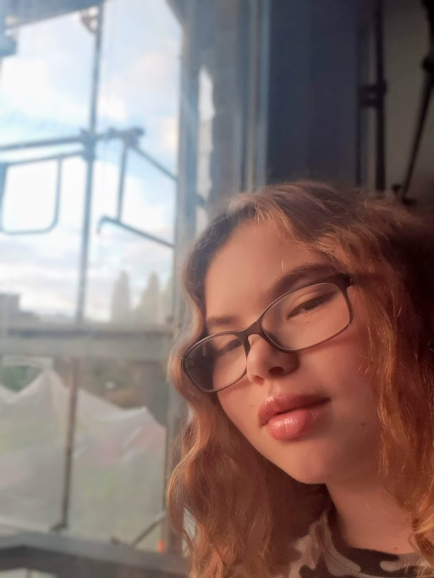
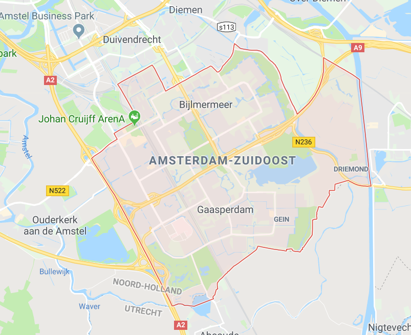

Zoals je waarschijnlijk al weet is mijn naam Virlyn Walker. Mijn naam heeft geen betekenis en je spreekt mijn achternaam ook niet op de Engelse manier uit

Ik woon in Amsterdam-Zuidoost, Amsterdam-Zuidoost staat ook wel bekend als de Bijlmer. Ik woon in Gein en dat is helemaal achteraan in Amsterdam-Zuidoost en dichtbij Abcoude. Om naar school te gaan moet ik ongeveer 50 minuten fietsen, met de metro is het 40 minuten. Ik fiets meestal naar school omdst ik de metro en de tram niet fijn vind.

Mijn hobbies zijn dus tekenen en Netflix kijken. Ik teken meestal random dingen als ik niks te doen heb. Op Netflix kijk ik meerdere series, ik heb niet echt een favoriete serie omdat ik veel dingen leuk vind. Meestal kijk ik series met actie en superhelden, ook kijk ik dingen met weerwolven en demonen.